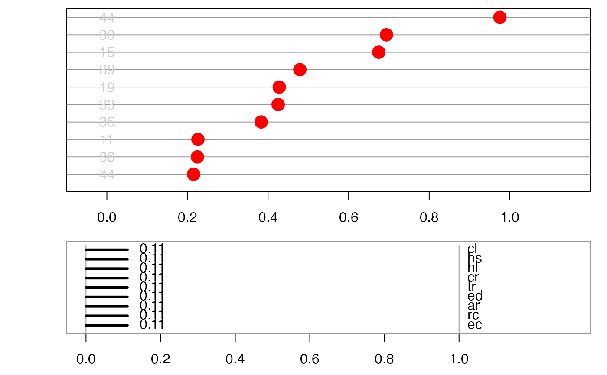
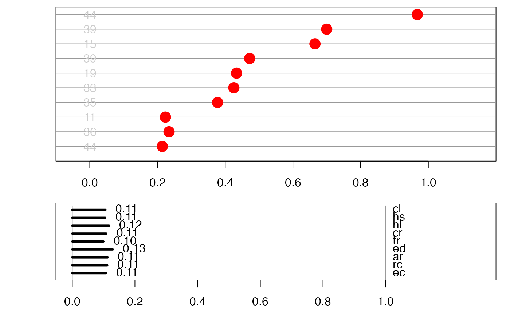

Animate a 1D tour path for data where individuals are ranked by a multivariate index. Allows one to examine the sensitivity of the ranking on the linear combination. Variables should be scaled to be between 0-1. This is only designed to work with a local tour, or a radial tour.
display_idx(
center = FALSE,
half_range = NULL,
abb_vars = TRUE,
col = "red",
cex = 3,
panel_height_ratio = c(3, 2),
label_x_pos = 0.7,
label = NULL,
label_cex = 1,
label_col = "grey80",
add_ref_line = TRUE,
axis_bar_col = "#000000",
axis_bar_lwd = 3,
axis_label_cex_upper = 1,
axis_label_cex_lower = 1,
axis_bar_label_cex = 1,
axis_bar_label_col = "#000000",
axis_var_cex = 1,
axis_var_col = "#000000",
palette = "Zissou 1",
...
)
animate_idx(data, tour_path = grand_tour(1), ...)should 1d projection be centered to have mean zero (default: TRUE). This pins the centre of distribution to the same place, and makes it easier to focus on the shape of the distribution.
half range to use when calculating limits of projected. If not set, defaults to maximum distance from origin to each row of data.
logical, whether to abbreviate the variable name, if long
the color used for points, can be a vector or hexcolors or a factor, default to "red".
the size used for points, default to 0.5
input to the height argument in [graphics::layout()] for the height of data and axis panel.
the x position of text label, currently labels are positioned at a fixed x value for each observation
the text label, a vector
the size for text labels
the color for text labels
whether to add a horizontal reference line for each observation, logical default to TRUE
the color of the axis bar
the width of the axis bar
the size of the axis label in the upper panel
the size of the axis label in the lower panel
the size of the axis label
the color of the axis label
the size of the variable name to the right of the axis panel
the color of the variable name to the right of the axis panel
name of color palette for point colour, used by
hcl.colors, default "Zissou 1"
ignored
matrix, or data frame containing numeric columns
tour path generator, defaults to 2d grand tour
data(places)
places_01 <- apply(places[1:10,1:9], 2, function(x) (x-min(x))/(max(x)-min(x)))
b <- matrix(rep(1/sqrt(9), 9), ncol=1)
places_init <- cbind(places_01, idx = as.vector(as.matrix(places_01) %*% b))
places_sorted <- places_init[order(places_init[,10]), 1:9]
animate_idx(places_sorted, tour_path = local_tour(b, angle=pi/8),
label=as.character(places$stnum[1:9]),
label_x_pos = 0)
#> Using half_range 2.7

